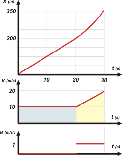

|
NO ME SALEN
PROBLEMAS RESUELTOS DE BIOFÍSICA DEL CBC
(Movimiento uniformemente variado)
|
|
|
| |

|
12) Un móvil recorre dos tramos rectilíneos sucesivos. El primer tramo, de 200 m, lo hace a
una velocidad constante de 10 m/s. El segundo tramo lo hace en 10 s y en forma
uniformemente variada, duplicando su velocidad en esos 10 segundos.
a) Calcular la velocidad media en cada tramo y en el recorrido total.
b) Graficar, para el recorrido total, la aceleración, velocidad y posición en función
del tiempo. |
Este ejercicio fue diseñado para que lo resuelvas gráficamente. Le voy a dar el gusto al autor del ejercicio, pero después te lo voy a resolver con las ecuaciones horarias... a ver si aprendés cinemática con un poco de profundidad.
Acá tenés los gráficos. Es cierto: aproveché y volqué todos los valores de las incógnitas; vos ignoralos. |
|
|
|  |
Concentrate en el gráfico de velocidad. Tenés que saber que el área encerrada bajo la curva representa el desplazamiento. Bien, mirá el área celeste, que representa el desplazamiento del primer tramo. Debe equivaler a 200 m, se trata de un rectángulo cuya altura vale 10 m/s. Luego la base debe valer 20 s. Porque el área del rectángulo es base por altura y 10 por 20 es 200. Fácil, ¿no?
Ahora mirá el trapecio, que representa al segundo tramo. Su base vale 10 s, ya que es un dato del ejercicio. El lado oblicuo va de 10 m/s a 20 m/s, porque también lo dice el enunciado. Y si hacés el cálculo del área obtenés 150 m. De modo que el móvil finaliza su viaje a los 30 s en la posición 350 m. Y chaupinela (?). |
|
|
|
Todavía me falta comentarte los otros dos gráficos. El de posición consiste en una recta oblicua para el primer tramo y un arco de parábola ascendente para el segundo. Mirá qué detalle: en el cambio de movimiento la curva se tuerce muy suavemente (los gráficos de posición en función del tiempo tienen prohibidos los puntos angulosos).
Por último, el gráfico de aceleración-tiempo. Fijate que siempre hago los tres gráficos encolumnados en el mismo orden y con la misma escala de tiempo... re-cool.
Te voy a mostrar cómo hubiera resuelto yo este ejercicio si tuviese el objetivo de aprender física en lugar de el de calcular cosas absurdas. Primero haría un esquema para entender bien de qué se trata y para ponerle nombre a todas las cosas y que después no se me mezclen ni se me confundan cuando se van a pasear juntas al bosque algebraico. Acá va: |
|
|
 |
|
|
¿Te cierra? El primer tramo es un MRU y el segundo un MRUV. Tenés que tener los modelos a la vista:
MRU → x = xo + v ( t – to )
MRUV → x = xo + vo ( t – to ) + ½ a ( t – to )²
MRUV → v = vo + a ( t – to )
y reemplazar las constantes del modelo (las que te escribí en verde) por las constantes del movimiento (en general se eligen las iniciales) y que tenés en el globito verde las del MRU y en el rosa las del MRUV. Quedan así: |
|
|
MRU → x = 10 m/s . t
MRUV → x = 200 m + 10 m/s ( t – t1 ) + ½ a ( t – t1 )²
MRUV → v = 10 m/s + a ( t – t1 )
|
|
Estas son las ecuaciones que describen todo el fenómeno, son las que todos se saltean: las ignoran. Y son lo más importante de la física. |
| Ahora que tengo armadas las ecuaciones que describen el movimiento, vamos a usarlas, es decir, les voy a pedir que hablen del punto en el que tengo un interés especial: el 1 y el 2. Para usarlas, lo que hacemos es reemplazar las variables (lo que te pinté en rojo). Y para hacértelo más corto, ya puse ( t2 – t1 ) = 10 s. |
|
|
 |
200 m = 10 m/s . t1 |
[1] |
(la 1ra. habla de 1) |
| x2 = 200 m + 10 m/s . 10 s + ½ a (10 s )² |
[2] |
(la 2da. habla de 2) |
| 20 m/s = 10 m/s + a (10 s ) |
[3] |
(la 3ra. habla de 2) |
|
Inevitablemente llego a un sistema de tantas ecuaciones como incógnitas (en este caso 3 y 3) y sólo resta resolverlo. A partir de aquí se trata de una cuestión algebraica, no física... y bastante sencilla, por cierto. Yo te ayudo:
De la ecuación [1] despejo y calculo t1:
t1 = 20 s
Y de la ecuación [3] despejo y calculo a:
a = 1 m/s²
Con eso voy a la ecuación [2] y hallo x2:
x2 = 350 m
Creo que me olvidé del item a): Calcular la velocidad media en cada tramo y en el recorrido total. Una papa, siempre y cuando uses correctamente la definición de velocidad media:
1er. tramo → vm1 = Δx01/Δt01
vm1 = 200 m / 20 s
vm1 = 10 m/s
2do. tramo → vm2 = Δx12/Δt12
vm2 = 150 m / 10 s
vm2 = 15 m/s
Total → vmT = ΔxT/ΔtT
vmT = 350 m / 30 s
vmT = 11,67 m/s
Fue terrible... estoy agotado. Deberían hospitalizarme. Oh... |
|
 |
| Desafío: ¿En qué instante pasa el móvil por la posición x3 = 310 m? |
|
|
|
| Algunos derechos reservados (en criollo: no podés publicarlo a tu nombre, ¿entendiste?).
Se permite su reproducción citando la fuente. Última actualización jul-08. Buenos Aires, Argentina. |
|
|
| |
|
|
| |
|